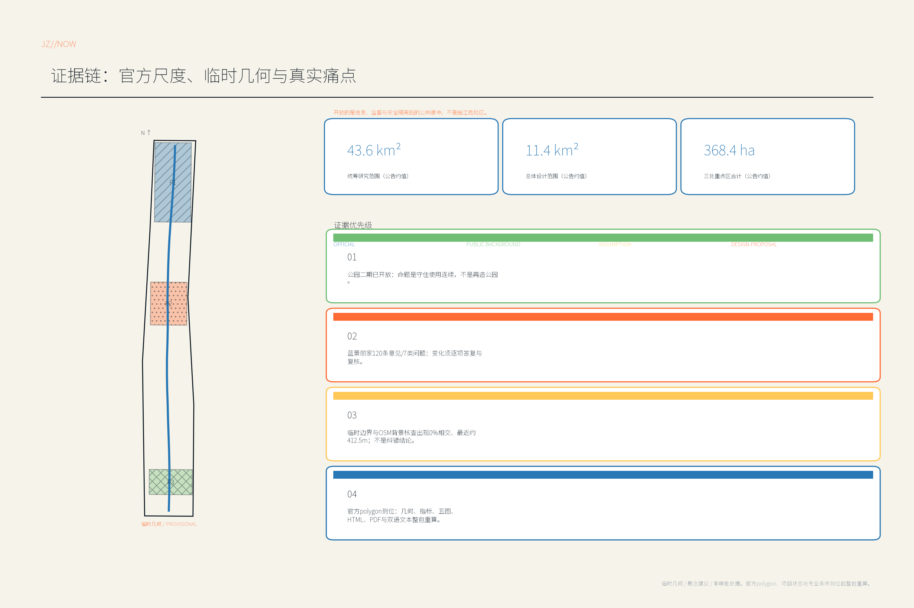
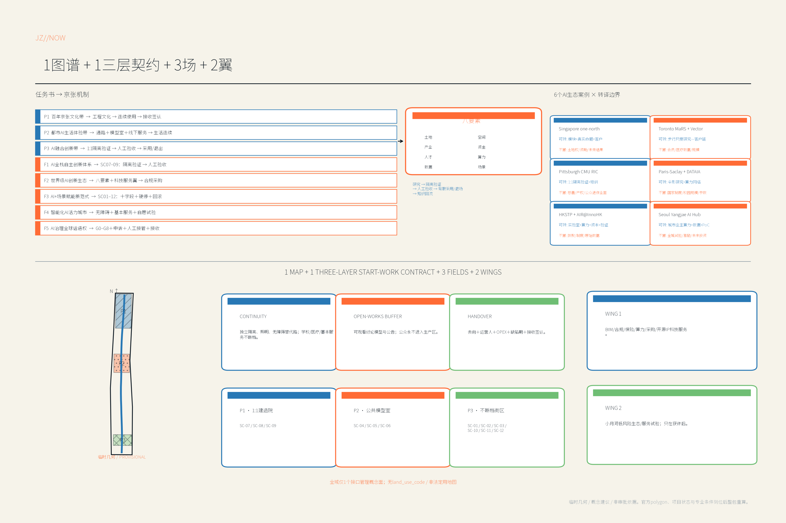
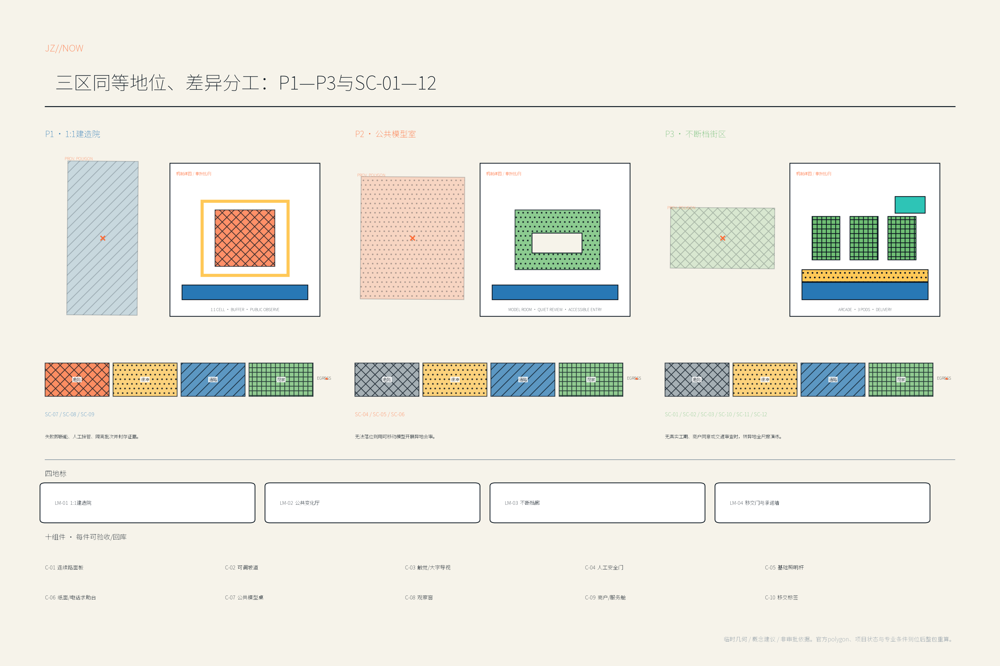
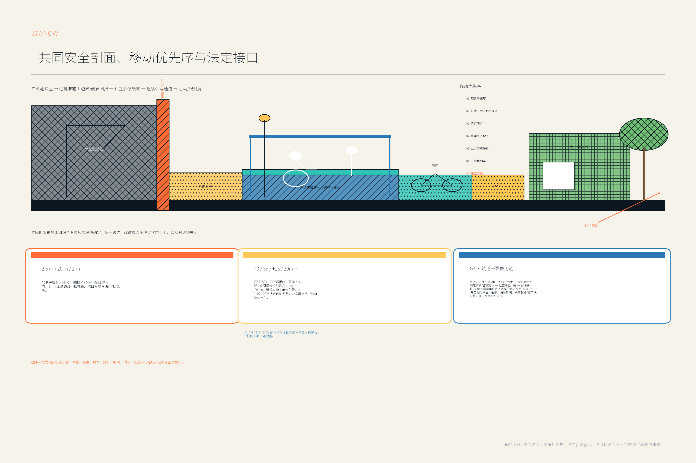
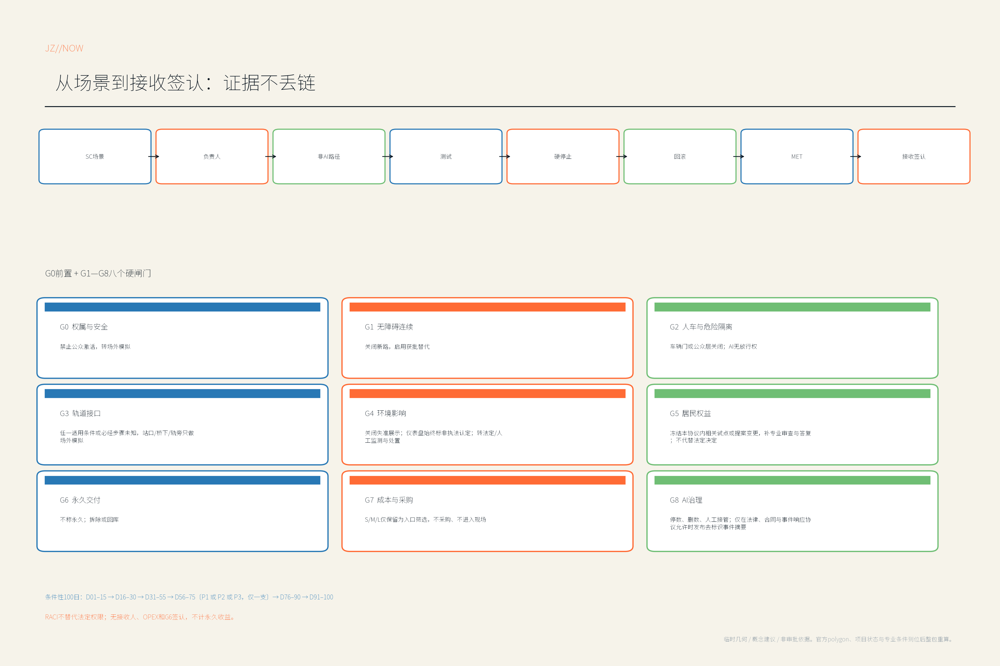

京张进行时 / JINGZHANG IN PROGRESS：建设不停城
以建设期城市主义把百年京张AI创新带变成可持续开放的更新现场：连续通行、开放工地缓冲与永久移交三层契约，联动1:1具身AI建造试验、公共模型共设计和居民商业服务不断档。
京张进行时 / JINGZHANG IN PROGRESS：建设不停城
核心命题：每一道临时工程，必须预演并留下至少一项永久公共收益。
设计对象不是一张假定完成的终局蓝图，而是从围挡出现、服务迁移、施工运行到验收移交的全过程。OPEN WORKS PROGRAM 是运营副品牌；它不把活跃工地包装成公园，也不允许公众进入生产作业面。
开放的是信息、监督与安全隔离后的公共缓冲，不是施工危险区。Open means open to scrutiny, never open access to a work zone. 本方案是一套嵌入总体城市设计的“建设期公共价值操作系统”，不替代总体城市设计、控规、施工组织设计或法定审批。
设计依据与资料清单
征集公告明确统筹研究、总体设计和三处重点区域三个层次，并要求统筹已有、在建和拟建项目。来源 来源
公开资料显示京张遗址公园承担大量社区日常使用，海淀持续推进轨道扩能、滨水与更新工作。来源 来源
真正的缺口因此不是再画一条“未来轴”，而是让通勤、上学、就医、经营、配送与公共服务在长期变化中保持连续，同时让AI先在可控现场被验证、问责和移交。具体项目是否已开工、其红线与工期如何，必须由项目主管部门和建设单位核验，本方案不作推定。来源 深度
证据锚点
| 锚点 | 内容与用法 | 状态 |
|---|---|---|
| SRC-01 | 征集公告：三层范围、三处重点区、任务与成果深度。来源 | 官方公开 |
| SRC-02 | 面向智能体任务书：agent.1—agent.6、五大功能与开源提交要求。来源 | 官方仓库任务 |
| SRC-03 | 场地包、来源登记与事实导航。来源 来源 来源 | 依登记用途使用 |
| SRC-04 | 北京日报京张遗址公园公开报道：公园的社区日常使用与线性公共空间价值。来源 | 可信公开背景，不是规划/工程依据 |
| SRC-05 | 海淀区政府工作报告：轨道、停车、滨水和城市更新等工作背景。来源 | 官方公开背景 |
| SRC-06 | 蓝景丽家规划综合实施方案公示采信通告：120条意见及七类真实关切。来源 | 官方公开参与记录，不决定本案地块 |
| SRC-07 | 海淀区城市更新导则：人民参与、全龄友好、低成本创新空间与全生命周期供给。 | 官方公开，见参考资料 |
| SRC-08 | Crossrail、HS2、NEST、纽约临时通道、伦敦临时使用、墨尔本围挡与HafenCity案例。 | 方法参照，不移植其法规数值 |
| SRC-09 | 北京分层参考：《园林绿化施工作业安全手册》§5.3与道路空间规划设计标准DB11/T 1116—2024。 | 仅在各自适用范围内使用；专项评估、项目条件与审批优先 |
| SRC-10 | 施工噪声标准GB 12523—2025，自2026年1月1日起实施并替代2011版。 | 按适用法定限值与责任程序执行 |
| ASM-01 | SITE-001及PROV-KEY-001—003均为临时几何约束，不是官方边界。来源 来源 | 待官方polygon替换 |
| ASM-02 | 控规、权属、市政、遗产、消防、施工组织与项目状态尚不完整。[assumption:A-CONTROLS-001] | 立项前置核验 |
| ASM-03 | 三个试点的面积、数量和接口均为概念包络。 | 经同意与专业审查后锁定 |
| MET-01 | 连续性指标组：通路、无障碍、基本服务与经营可达。 | 基线待测 |
| MET-02 | AI试验指标组：急停、失联、缺陷识别与人工签认。 | 试验协议待定 |
| MET-03 | 治理移交指标组：告知、投诉、承诺、缺陷期与复用。 | 责任协议待定 |
| SC-01—12 | 第六章十二张场景卡。 | 每张均含非AI路径与回滚 |
所有判断分为四级：官方事实、可核公开背景、待核假设、设计建议。图上的精确位置只表达提交生成逻辑；不将新闻时间、邻接项目状态或临时图层改写成政府承诺。

几何纪律
geometry/site_boundary.geojson 的 SITE-001 与 geometry/key_areas.geojson 的 PROV-KEY-001、002、003 均应按 official_boundary=false、geometry_role=provisional_constraint 解读。空间数据 空间数据 任何临时通路、围挡、车行门、试验单元和公共服务替代点，均须在取得正式项目红线、施工组织、地下管线、消防疏散、轨道保护、遗产与道路条件后落位。官方polygon发布时，必须整体复算用地、建筑、道路、绿地、公共空间、分期、指标与五张图，而不是平移一个边界。
三层范围工作框架
| 层级 | 公告尺度 | “京张进行时”的回答 | 核心成果 |
|---|---|---|---|
| 统筹研究范围 | 约43.6平方公里 | 建立“城市建设也能被公开测试”的AI产业与治理能力，连接高校、企业、施工供应链和社区 | 开放工地标准、案例库、培训与采购框架 |
| 总体设计范围 | 约11.4平方公里 | 以公园为连续性控制线，用动态工程图谱协调跨项目的通行、服务、环境与时序 | 7/30/90日影响日历、替代网络、累计影响审查 |
| 三处重点区域 | 合计约368.4公顷 | 三个不同场域分别验证建造、共设计和服务不断档 | 1:1建造院、公共模型室、不断档街区 |
三个尺度不互相代替：统筹层形成产业和治理标准，总体层把标准转成跨项目接口，重点区用小而真实的试点验证。范围值来自公告，具体边界仍受ASM-01约束。标准 深度

一个图谱、一份开工契约、三个场域、两翼支撑
“一个图谱”是经责任人签字更新的动态工程图谱；“一份契约”是每个参建项目进入施工前提交的三层开工契约；“三个场域”是三处重点区的差异化验证；“两翼”分别是中关村科技服务翼与小月河场景翼。京张遗址公园是需要守住的连续性控制线，不是另造一条概念主轴。
| 三层开工契约 | 必须先交付什么 | 运行边界 | 移交判定 |
|---|---|---|---|
| 连续通行层 | 独立隔离、连续照明、无障碍且有独立疏散的替代路线；学校、医疗和基本服务替代方案 | 与施工车流和作业面硬隔离；保留纸面、电话和现场人员路径 | 原通路恢复或永久路线通过无障碍与安全核验 |
| 开放工地缓冲层 | 可观看、可讨论的模型、样板和公告缓冲区 | 公众不进入生产区；法定监测与安全管理不由展示系统替代 | 临时设施拆除、转用或进入共享构件库 |
| 永久移交层 | 临时投入的永久去向、运营人、经费、缺陷责任期和证据包 | 未明确接收人的“公共收益”不得计入承诺 | 现场走查、缺陷关闭、接收人签认并公开状态 |
高风险事故、无障碍断链、应急通道受阻或机器人急停失效，触发立即暂停并恢复上一安全服务状态；传播活动与开放参观不得成为绕过安全审查的理由。
不可倒置的共同安全剖面
所有公众场景只布置在已清权的公共侧，并统一采用 专业危险区 → 经批准施工边界/硬质围挡 → 独立禁停缓冲 → 连续公众通道 → 活动/服务舱。危险区距离和禁停缓冲的实际尺寸全部由施工组织、专项风险评估及审批确定；概念图不预设任何安全距离。禁停缓冲不得放座椅、排队、展陈或售卖。公众通道的净宽、坡度、横坡、转弯、触觉提示、照明、排水和疏散按适用道路等级、无障碍与消防条件逐点复核。任何施工边界、危险源、围挡、疏散或人车冲突状态不明，公众激活均为关闭态，只保留经批准的非数字绕行。标准
危险测试时，公众观察切换为场外视频或取消；顶棚、观察窗和数字告警均不能把吊装、坠落、坍塌、基坑、车辆回转、临电或轨道保护危险区变成可进入空间。一般房建、市政施工及P1试验按实际工程类型适用GB 55034—2022等国家施工安全主控和设备专项标准，园林手册仅在其适用范围内作补充参考。AI无权开路、移围挡、放行车辆或批准公众进入。来源
统筹研究范围产业与未来城市研究
品牌与战略定位
中文名“京张进行时”强调城市更新是可被看见、校验和纠偏的过程；英文名“JINGZHANG IN PROGRESS”避免把未完成状态伪装成既成成果；运营副品牌“OPEN WORKS PROGRAM”对应可复用的开工契约。标志建议采用三条可分离又可咬合的带形：铁路蓝代表连续通行，安全橙代表受控试验，公共绿代表永久收益；标志只表达方法，不暗示官方认证。
本方案不另造定位和功能，而是把任务书的三大定位、五大功能转成可验收的空间与运行机制：
| 任务书主控项 | “京张进行时”的机制映射 |
|---|---|
| 百年京张文化带 | 用“测量—建设—移交”的可核工程文化组织公园连续性、公众理解与永久接收，不做复古主题包装 |
| 都市AI生活体验带 | 以连续通路、公共模型室、线下等价服务和不断档街区，让AI体验先服务通勤、就医、经营与知情 |
| AI融合创新带 | 以隔离1:1验证、专业签认、有限采购/部署和失败知识回流连接研究、建造、运营与社区 |
| AI全栈自主创新体系 | 众智园承载SC-07—09，从机器人急停、失联到构件质检形成“实验室—隔离验证—人工验收”链 |
| 世界级AI创新生态 | 八要素体系与中关村科技服务翼提供空间、合规、保险、算力、采购、人才和开源/IP接口 |
| AI+场景赋能新范式 | SC-01—12均绑定真实空间、非AI基线、人工负责人、停止条件、回滚与可删除数据 |
| 智能化AI活力城市 | 原点公共模型室、大钟寺不断档街区和小月河场景翼优先保证无障碍、基本服务与自愿商业试验 |
| AI治理全球话语权 | G0—G8、在法律/合同/事件响应协议允许范围内公开的去标识失败档案、申诉、人工接管和永久移交证据形成可复核的治理语言 |
在上述任务书框架下，本方案形成三项实施价值：全国可复制的建设期城市主义示范、具身AI建造的1:1验证入口、居民与商业不断档的更新基准；并用连续通行、全尺度验证、公共共设计、临时经济/基本服务、永久移交五类操作模块承接八项主控要求。这些是实施工具，不替代任务书的三大定位与五大功能。来源 深度
产业生态：从演示采购转为证据采购
开放工地标准可形成一条新产业链：高校和实验室提供算法、机器人与材料研究；建筑企业和供应商提供可测试构件与工法；安全、保险、法务、BIM、无障碍和第三方检测形成专业服务；居民、商户和一线工人共同定义失败条件；项目业主以证据包而非演示效果决定采用。中关村科技服务翼提供BIM、合规、保险、算力、采购和创业服务；小月河场景翼提供滨水界面、生态监测与公共服务的低风险验证，但二者的具体载体须另行确认。
小月河场景翼首轮只承接低风险、可退出的公共体验路径：既有获准入口 → 纸面7/30/90变化牌 → 依法公开或获授权的生态/水务数据解释点 → 人工服务联络与退出。主用SC-04、SC-05；SC-11仅在正式运营人授权时适用。未取得水务、生态、岸线权属和设施许可时，不在岸线安装设备，只在P2公共模型室演示。
八类要素形成闭环而非招商清单：土地仅提供经清权的临时接口，不预设调地；空间提供隔离试验格、公共模型室与不断档街面；产业沿“实验室—隔离1:1验证—专业验收—有限采购/部署—知识回流”推进；资金分开承担现场缓解、共用设施和独立评估；人才包括研究者、工程师、工人、运营者与居民评审者；算力只服务仿真和脱敏推理；数据采用最小采集、版本和删除规则；场景用G0—G8决定继续、修改或退出。AI原点另承担开源/IP边界、成果转化辅导和国际团队短驻建议，但不预设企业名单、补贴或招商承诺。
六个AI创新生态案例单独回答agent.2；它们与下表之后的建设期实施先例不是一组。案例只转译机制，现状、已公布未来项目和历史资金严格分开：
| AI生态案例 | 八要素证据摘要 | 京张可转译 | 不可直接移植 |
|---|---|---|---|
| 新加坡one-north＋AI Singapore＋Kampong AI 来源 | JTC土地与模块空间；AI产业；任务制共同资助；学徒/博士人才；平台工程；企业授权数据；约六个月MVP场景。Kampong AI属已公布更新计划，不当作成熟成效 | “模块空间＋真实企业命题＋工程团队＋验证客户”转化单元 | 土地权限、资助金额/比例，以及尚未完整建成的未来状态 |
| 多伦多MaRS＋Vector Institute 来源 | 市中心混合创新楼；AI联动健康/金融/交通/气候；政府与产业支持；研究/硕士/实习人才；机构算力；行业受控数据；企业采用场景 | 在步行尺度压缩研究机构、企业客户、投资与人才 | 会员制度、医疗数据权限、机构规模；空间共址不等于数据共享 |
| 匹兹堡Hazelwood Green＋CMU RIC 来源 | 棕地再生；高跨/室内外1:1试验；机器人与先进制造；基金会/州支持；校企与社区人才；实体研发设备；项目数据；装配/检验场景 | 棕地更新＋隔离实体试验＋企业共址＋工人培训，直接支撑P1 | 美国慈善、大学产权与合同；受控试验不等于公众进入作业面 |
| 巴黎萨克雷＋DATAIA 来源 | 分布式科学城；实验室/技术转移/孵化网络；国家与大学研究机制；博士和继续教育；共享CPU/GPU；安全授权交换；健康/交通/能源/城市化场景 | 用伞形机构连接分散院校、算力、人才、产业命题和转移 | 国家科研制度、超大校园尺度及既有算力参数 |
| 香港科技园＋AIR@InnoHK 来源 | 科学园/先进制造空间；AI与机器人；历史政府投入及孵化资本；国际联合科研人才；商业HPC；订阅/授权数据；制造、医疗、物流验证 | “国际实验室＋算力＋孵化资本＋制造/医院邻接验证” | 历史拨款、香港土地/科研制度；跨行业接入不等于开放原始数据 |
| 首尔Yangjae AI Hub 来源 | 既有市级创业空间；AI/机器人；R&D与PoC支持；培训；企业GPU；治理后的城市数据；交通/照护/安全等场景。Physical AI Belt属未来计划 | 城市业主把算力、治理数据、PoC与监管反馈串成采用链 | “全城试验场”、税/FAR激励、未来投资和未经授权开放公园 |
共同规律不是“AI企业集中＋展示中心”，而是土地/空间载体、产业命题、风险共担资金、连续人才、可用算力、逐项授权数据和真实场景形成研究—验证—采用闭环；算力可用不代表数据可用。
区域协同采用“能力接口而非项目承诺”：京张带输出开放工地协议、失败档案和构件接口；北纬社区、未来科学城、怀柔科学城、经开区与京津冀供应链仅在各方授权后，按“问题—测试能力—采用主体—知识回流”登记单项合作。未登记授权不得写成项目、预算、数据共享或空间落位。
开发者与企业转化漏斗为：开放征集 → 安全训练 → 隔离验证 → 公共模型审议 → 有限试点 → 合规采购选择或退场 → 合规范围内的去标识知识回流。每一步都有人工负责人和退出路径，未通过者进入失败档案；失败信息仅在法律、合同与事件响应协议允许范围内去标识使用，不以传播热度替代采用证据。
| 建设期实施参照 | 可转译机制 | 不直接移植 |
|---|---|---|
| Crossrail社区与环境管理 | 分标段社区计划、责任接口、施工前承诺 | 其合同结构与英国阈值 |
| HS2独立施工专员 | 独立申诉和问责角色 | 英国法定权限 |
| 纽约建筑规范临时通道 | 受保护、照明、无障碍的连续通行思路 | 纽约尺寸与审批条款 |
| Empa NEST | 1:1、可拆换、有人使用前验证 | 实验设施的准入条件 |
| 伦敦Meanwhile Use | 空置与临时空间的短周期运营 | 当地租赁与税制 |
| 墨尔本Creative Hoardings | 围挡成为有策展责任的城市界面 | 视觉许可制度 |
| HafenCity | 分期滚动、总体目标稳定、项目持续校准 | 土地制度与开发参数 |
春季“1:1建造挑战”、夏季“不断档步行审计”、秋季“公共移交周”和冬季“失败档案更新”可作为年度运营建议；活动须服从真实项目节奏和安全条件，不写成已确定的政府活动。来源
总体设计范围城市更新与控规深度城市设计
公园连续性控制线与动态工程图谱
总体结构不是新增法定轴线，而是把现有公共空间、轨道站点、社区入口、学校医疗、商户界面和建设项目组织成“连续性网络”。动态工程图谱对每个已核验项目记录：权属与责任人、红线与围挡、7/30/90日影响、步行骑行与无障碍替代、施工车门、噪声扬尘法定监测接口、停水停电计划、学校医疗窗口、商户服务窗口、投诉渠道、移交承诺和证据状态。未核验项目显示为“待核”，不得在公众图上标作在建。
工程状态由项目业主签字。跨项目视图由“建议性进行时秘书处职能”维护，可由现有主办、承办或项目协调机制承接，不假定新设政府机构，也不取得审批或执法权。任何算法只能提示冲突，不能自动批准占路、停服或变更施工组织。相邻项目若在同一周影响同一条必要通路、同一所学校/医院或同一社区服务，应由有权责任主体会审错峰、缩短、提供冗余路线，必要时依合同或法定权限调整活动。[assumption:A-CONTROLS-001] 深度
五类空间接口
| 接口 | 空间动作 | 控规/工程衔接 |
|---|---|---|
| U1连续廊 | 保证一条清晰、遮护、照明、无障碍的替代路线 | 以正式道路红线、消防疏散和轨道保护条件校核 |
| U2安全门 | 人车分流、等候区、转弯视距与人工指挥位 | 纳入施工交通组织，不由AI独立放行 |
| U3服务舱 | 经对口部门/正式运营人授权的服务导航、预约/转介、取送、卫生间或商户连续性载体；不承载诊断、资格、审批或补偿决定 | 明确授权、用地许可、接电排水、运营、隐私与撤除责任 |
| U4开放缓冲 | 模型、样板、公告、观察窗和工人休息界面 | 与作业区硬隔离，满足消防与人群控制 |
| U5移交构件 | 可复用铺装、树池、座椅、遮棚和数据接口 | 预先指定永久位置或共享构件库接收人 |
用地性质、建筑高度、容积率、退线、停车和市政容量均不在资料完备前给出伪精确值。总体设计只确定需要被正式控规和工程条件验证的界面、优先级和证据流程。空间数据 空间数据 深度
轨道接口一票停用链
大钟寺、13号线邻近界面及任何城市轨道站口、桥下、轨旁建议首先判定轨道类型及是否进入依法公告的轨道交通安全保护区。仅在保护区内且属于条例第19条列举作业时，作业单位先制定安全防护方案和监测方案，征得运营单位同意，再依法办理有关行政许可；实施中运营单位可以依法开展动态监测和现场巡查；结束后作业单位须会同运营单位评估对运营安全的影响，将结果报市交通行政主管部门备案，并按评估消除影响。既有铁路资产或遗产线另按其权属与适用法规核验，不能套用城市轨道程序。任一适用条件或必经步骤未知，现场方案自动降级为场外全尺寸模拟，不画桥隧可行性结论、不改变站口或轨道设施。该链由有权主体执行，AI只提示资料缺口。来源 深度
7/30/90日变化协议
所有获同意的试点发布经责任人核验的未来7日已知影响与不确定性、30日可预见变化和90日关键里程碑；紧急变化由有权现场责任人依获批信息发布程序即时告知，并保留纸面告示。每周一次“变化会”只审四件事：下一次断点在哪里、谁受影响、非AI替代是否可用、哪项承诺进入永久移交。公开状态只有“拟议、试点、通过、暂停、已移交”五类，“城市保持开放标记”不能由项目自评授予。
重点区域详细设计
三处角色是基于公告任务和临时重点区生成的设计方向，不是对具体地块、现有建筑或当前施工状态的官方认定。空间数据 空间数据 空间数据
本开源概念阶段按重点区正式深化所需问题组织接口、空间原型和证据门槛，但不宣称已达到控规综合实施方案或工程详细设计深度；正式边界、现状测绘、权属、控规和专项条件到位后再由专业团队深化。深度
| 重点区域 | 差异化角色 | 空间构成 | 日常运营 | 永久收益 |
|---|---|---|---|---|
| 众智园AI自主创新加速区 | 1:1建造院 / Full-Scale Works Yard | 受控试验格、构件库、人工接管位、观察缓冲、工人培训室 | 机器人急停、构件质量、工法和安全培训 | 经验证工法、人才与可复用构件 |
| 北京AI原点社区 | 公共模型室 / Public Model Room | 1:200实体模型、无障碍数字台、变化墙、安静咨询室、移动样板台 | 每周变化会，比较日照、噪声、扬尘、交通和时序备选 | 可追溯的共设计决定与开放模型 |
| 大钟寺AI产业聚集区 | 不断档街区 / Stay-Open District | 连续骑楼式遮护、商户服务舱、配送口袋区、四象限到达提示 | 经营可达、基本服务替代、配送和网约车协调 | 可继续经营的首层界面与清晰到达系统 |

三区是“同等地位、差异分工”，不是等面积或等场景负荷。下表区分主验证场与跨区适用范围；试点表中的SC编号只表示首轮主责，不把全线场景错误锁进一个片区。
| 场景 | 主验证场 | 适用范围 |
|---|---|---|
| SC-01—02 通路与必要服务 | P3 | P1、P2、P3及全线已核接口 |
| SC-03 工地车门 | P3 | P1、P3；P2仅在真实施工车门存在时 |
| SC-04 影响日历 | P2 | 总体范围与全部已核项目 |
| SC-05 环境与投诉 | P2 | P2、P3及所有敏感界面 |
| SC-06 公共模型 | P2 | P2主场，可移动模型支援P1/P3 |
| SC-07—09 机器人与构件 | P1 | 仅P1隔离试验格，其他区只看脱敏结果 |
| SC-10 商户不断档 | P3 | P3及后续自愿商业接口 |
| SC-11 基本服务替代 | P3 | 三处重点区及所有正式运营人授权接口 |
| SC-12 移交与回库 | P1、P2、P3 | 每一个完工接口 |
三个首发试点
| 试点 | 概念包络 | 先验证什么 | 前置与回滚 |
|---|---|---|---|
| P1 众智园受控试验格 | 约20×20米模块化隔离试验单元 | SC-07—09：急停、失联、构件缺陷与工程师签认 | 权属、消防、设备安全和独立疏散确认；失败即断能、人工接管、封存证据 |
| P2 原点公共模型室 | 优先复用一处约80—150平方米可达首层空间 | SC-04—06：影响日历、公众改模与问题闭环 | 获场地同意并提供无障碍数字替代；无法落位则用可移动模型开展异地会审 |
| P3 大钟寺不断档接口 | 一条经核验的无障碍通路与3—5家自愿商户/服务点 | SC-01—03、10—12的组合 | 只在未来真实施工接口、商户自愿和交通审查后启用；工期未核则异地全尺度演练 |
上述尺寸和数量是ASM-03概念包络，不是规划指标或招标数量。
四个可识别地标
1. “1:1建造院”：把高风险技术留在受控边界内，公众只在缓冲层观看。 2. “公共变化厅”：用一张不断更新的模型桌显示谁提议、谁有权决定、当前状态及理由。 3. “不断档廊”：把围挡、遮护、照明、服务舱与商户入口设计为同一街道界面。 4. “移交门与承诺墙”：只展示已由接收人签认的永久收益，未完成事项显示责任人与期限。
地标是可拆、可修、可复用的公共基础设施，不以昂贵造型取代日常功能。
地标的公众可达区、禁入区、独立疏散、运行程序和永久接收去向必须同时画在平面与剖面；大钟寺的“不断档廊”进一步提供“可撤销AI共营柜台”：在自愿商户控制的服务舱内试验多语商品说明、库存/配送辅助和维修预约，同时保留有人收银、现金、实体菜单和人工取送。商户可随时退出并要求删除试点数据；断网、误推或经营受损即切回人工。AI不得做差别定价、消费者敏感画像或替商户决定交易。四象限仅表示条件性到达关系，不表示连廊、桥隧或地下工程可行。
组件库含十件可单独验收和回库的构件：连续路面板、可调坡道、触觉/大字导视、人工安全门、基础照明杆、纸面/电话求助台、公共模型桌、观察窗、商户/服务舱、移交标签。荣誉状态只有“试行、通过、暂停/撤标、已移交”；承诺墙只记录接收人已签认事项。一带Logo表达总体品牌，施工期导视只表达安全与变化状态，两者不可混作官方认证标志。
AI 创新生态、人才画像与 AI+ 场景
人才与使用者画像
| 画像 | 关键需要 | 决策权 |
|---|---|---|
| 轮椅使用者、低视力通勤者 | 连续坡道、触觉与语音信息、无障碍绕行 | 参与代表性路线走查并可提出不开放建议；有权责任人须记录、答复并按规范决定 |
| 老年居民 | 短距离、休息点、线下通知与人工帮助 | 参与日夜走查 |
| 家长与学生 | 上学时段安全、施工车错峰、明确监护界面 | 参与学校窗口协议 |
| 本地商户与服务人员 | 门前可达、装卸、客流告知与自愿参与 | 决定是否加入经营试点 |
| 骑手、快递与网约车司机 | 清晰临停、取送和不逆行的接驳 | 共定配送时窗 |
| 一线工人 | 安全、休息、培训与不被算法绩效监控 | 拥有人工停机和匿名报告渠道 |
| 场地安全负责人 | 清楚边界、应急和设备状态 | 在其法定/合同职责范围内对作业和公众开放拥有停权 |
| 项目业主与运营人 | 合规、成本、责任与长期接收能力 | 对本项目承担最终责任 |
| 高校研究者与创业团队 | 可测试、可复现实验与明确数据边界 | 只能在批准协议内操作 |
| 国际短驻团队与开源维护者 | 多语到达、无障碍短驻工位、开源/IP边界、安静工作与日常服务导航 | 可拒绝进入数据试验并退出；不据此承诺签证、住房或补贴 |
人才体验不是孤立的“办公＋公寓”产品，而是一条可核验的工作—学习—交往—生活链：众智园提供受控研发与工人培训，AI原点连接高校、公共模型室和开源协作，大钟寺提供自愿商业服务、维修和日常交往，遗址公园与小月河承担不植入广告的步行休憩，中关村科技服务翼补足法务、保险、成果转化和多语支持。短驻载体、托育、住宿和生活服务只登记现有合规供给与缺口，不先画新建筑或作招商承诺。
十二张场景卡
下表为可读摘要；完整十字段卡见 空间数据。进入实施协议前，责任主体须逐项复核并锁定无AI基线、AI具体作用、最小数据、模型指标、公共服务指标、合规指标、人工签字、故障安全态、留存/删除期和无AI路线。SC-07—09只能由具备相应资格和职责的工程专业人员或现场安全责任人最终判定，AI不得验收工程。
| ID | 场域、使用者与实体载体 | 数据与AI | 人工负责人、非AI路径 | 测试、停止与回滚 |
|---|---|---|---|---|
| SC-01 | 全线接口；轮椅、行人与骑行者；隔离临时通路 | 边缘计数提示拥堵，不采人脸 | 现场经理负责；纸图、路牌和引导员常开 | 日夜及轮椅走查；断链、积水或疏散受阻即关闭新路并恢复旧路/备用路 |
| SC-02 | 学校、养老、医疗接口；儿童、老人、患者；服务优先通道 | 预测高峰只用于排班 | 公共服务联络员；电话与人工预约 | 每个服务窗口演练；必要服务不可达时，触发有权现场责任人按批准方案暂停相应作业或启用获批等价替代 |
| SC-03 | 工地车门；司机、行人、骑手；分流门与等候袋 | 盲区告警辅助人工指挥 | 交通疏导员最终放行；手旗和信号灯备用 | 模拟失联和误报；高潜势险情触发关门、复盘，并由有权责任人依适用安全协议重新批准 |
| SC-04 | 总体范围；所有人；7/30/90日影响墙 | 冲突检测提示叠加影响 | 项目业主签字；纸面公告与电话同步 | 每周核对事实；未核状态不得发布，错误立即更正并留痕 |
| SC-05 | 住宅/学校邻接界面；居民与工人；监测箱和投诉台 | 异常趋势预警，不替代法定监测 | 环境负责人；人工巡检与热线 | 与法定设备校核；漂移或断线即标“不可用”，转法定/人工监测、巡检和责任主体处置 |
| SC-06 | 原点公共模型室；居民、设计师、业主；1:200模型与数字台 | 比较日照、噪声、扬尘、交通、时序备选 | 主持人记录；业主就其权限内事项作有理由答复，权限外事项只记录并提交有权主体；纸卡可提交 | 可追溯性审计；模型缺数据即降级为假设，不用于批准 |
| SC-07 | 众智园试验格；工人、研究者；隔离机器人单元 | 具身AI执行搬运/装配试验 | 安全官可物理断能；手工作业方案备用 | 空载、假载、实载逐级；越界、异常力或人员侵入立即断能 |
| SC-08 | 众智园试验格；设备团队；急停与失联台 | 监测延迟、定位和失联 | 独立安全官主导；机械锁止和人工撤离 | 每次变更后演练；急停或失联保护不通过不得带载 |
| SC-09 | 构件检验位；工程师、供应商；可追溯样板架 | 视觉/传感辅助缺陷检测 | 具备相应资格与职责的专业人员签认；人工量测为基准 | 盲测误报/漏报；高危漏报即停用模型、隔离批次、回到人工全检 |
| SC-10 | 大钟寺接口；商户、顾客、骑手；可撤销AI共营柜台、服务舱与取送口袋区 | 商户自选多语说明、库存/配送辅助和维修预约；不采敏感画像、不做差别定价 | 商户控制开关且可退出和要求删除；有人收银、电话、现金、实体菜单及人工取送保留 | 每日核对可达、营业、误推和数据删除；断网、阻塞消防或经营受损即切回人工、移舱/撤除并停止该模型 |
| SC-11 | 三处重点区；居民；经正式运营人授权的政务/医疗服务导航、预约或转介点及卫生间替代 | 排队提示，不作资格、诊断或补偿判断 | 对口部门/正式运营人负责；窗口和电话可用 | 授权与服务等价性走查；隐私、供电或无障碍失败即转回原/备用服务 |
| SC-12 | 每个完工接口；接收人、居民、承包商；移交门、承诺墙、构件库 | 自动汇总证据，不自动验收 | 业主和接收人签认；现场纸质清单 | 缺陷期复查；未达标则保留质保、修复，临时件回共享库而非弃置 |
所有场景均执行“最小权限、最少数据、人工最终责任、无手机可用”。AI不得决定征收、搬迁、补偿、执法或公共服务资格，不得以人脸、步态或工人效率评分代替安全管理。场景链由SC编号进入测试记录，MET编号进入绩效台账。来源 指标
用地、建筑规模与拆改留方案
本方案先确定实施单元和判断规则，不在缺少正式控规、产权和结构检测时虚构地块容量。空间数据 空间数据 深度
拆改留结论必须在对象级证据形成后确定。深度
| 策略 | 对象与优先序 | 必须取得的证据 |
|---|---|---|
| 留 | 仍在使用的基本服务、连续首层、成熟树木、可适应建筑、经认定遗产和关键通路优先 | 权属、结构、消防、遗产、使用与运营调查 |
| 改 | 空置首层、围挡边缘、低效装卸、可改造屋面/庭院，优先轻介入 | 结构安全、许可、市政容量、无障碍与成本全周期 |
| 临 | 服务舱、观察缓冲、模型室和可拆构件，先写永久去向 | 临时许可、接电排水、保险、运营人、撤除/接收日期 |
| 拆 | 仅限依法确认危险、无法满足项目必要条件或批准方案明确拆除的对象 | 法定程序、居民/商户安排、材料审计与替代服务先行 |
三处重点区的空间供给不同：众智园需要可隔离的大跨或室外试验空间及构件周转；原点社区优先复用可达首层和校园—社区界面；大钟寺优先保持沿街小单元、配送和基本服务连续。新增建筑量、容积率、高度与停车不在本阶段设定数值，待官方边界、控规条件、结构与交通市政容量核定。深度 深度
metrics.json 中 site_area_sqm 是对临时总体边界序列化后在EPSG:4548下复算的低置信工作值，不是官方面积；building_footprint_area_sqm、floor_area_ratio、高度和拆改留数量保持unknown。指标 指标
green_ratio与public_space_ratio只描述本次概念图层且为低置信，不是法定比例；正式polygon与清权现状图层到位后整包重算。指标 指标
正式polygon与图层替换后，应同时重算绿地与公共空间等比例。指标 指标
交通、轨道、市政与公共服务设施
交通优先级固定为应急与医疗、儿童老人和无障碍、步行骑行、基本服务配送、公共交通接驳、一般机动车、施工车辆；施工效率不能倒置该次序。13号线扩能和大钟寺站等只作为需对接的公开背景，不据此推定本站点的施工范围或竣工时间。来源 深度
移动与轨道接口
- 每个断点至少提供一条独立隔离、可辨识、可照明、无障碍的替代路线，并在落位时按正式规范核定净宽、坡度、转弯和疏散。
- 工地车门避开学校与公共交通高峰；AI仅做盲区提示，人工疏导员最终放行。
- 骑行连续性、共享单车停放、配送口袋区和网约车上落客作为施工组织的必审项。
- 轨道接驳按站厅、出入口、公交、步行、骑行和应急的完整链条审查；任何连廊或四象限连接均须另行完成产权、结构、消防、轨道保护和交通论证。
北京安全参考分两层使用：北京市《园林绿化施工作业安全手册》§5.3针对其适用作业提出施工现场封闭、围挡不低于2.5米，以及距交通路口20米范围内围挡1米以上部分通透且不影响视距的指导要求；不得外推为所有工程的统一尺寸。DB11/T 1116—2024规定城市道路空间规划设计中各级道路两侧设置且不中断人行道，并按道路等级给出宽度要求，本方案仅将其作为终态及连续性设计基线，不误述为施工期占道规定。临时占用、施工通行和替代路线另按获批交通组织、无障碍法律规范、项目专项评估与适用审批逐点校核；更严格或不同的正式条件优先。
市政与公共服务底线
工程图谱记录水、电、气、热、通信、排水和环卫的停服窗口、冗余方案、责任人与紧急电话。基本服务包括急救到达、学校出入、养老、可用卫生间、基本零售/取药、垃圾清运和无障碍信息；具体清单由现场基线调查与居民确认。停服计划须先有非AI替代，数字孪生和传感器不能替代法定勘察、检验和监测。空间数据 深度
施工噪声按生态环境部GB 12523—2025监测：对其适用情形，昼间限值70 dB(A)、夜间55 dB(A)，夜间最大声级不得高于夜间限值15 dB(A)，等效声级按20分钟测量；自动监测按HJ 1402—2024。建设单位、施工单位履行标准规定的责任。该标准自2026年1月1日起实施并替代2011版。公众端传感展示只辅助理解与异常提示，不替代法定监测、执法或责任认定。来源 来源

蓝绿空间、公共空间与城市风貌
京张遗址公园首先是居民正在使用的公共空间和跨片区连续界面；施工阶段的目标是守住其连续性、树木与雨洪功能，不将其当作设备展示带。小月河等滨水界面只在取得生态、水务和项目条件后开展低风险监测或服务试点。来源 来源 深度
三类公共界面
1. 连续界面：遮阳避雨、夜间照明、可坐可扶、触觉和大字信息、无障碍绕行；不得只给二维码。 2. 学习界面：观察窗、材料样板、1:200模型和失败档案；与作业区硬隔离。 3. 移交界面：把临时树池、透水铺装、座椅、遮棚和导视预先匹配永久位置或共享构件库。
城市风貌采用“永久品质的临时性”：围挡、服务舱和标识使用可维修的标准模数；铁路蓝、安全橙、公共绿标明连续、受控、已移交三种状态；7/30/90日信息中英双语、图文并用，并设触觉/语音和现场人工解释。夜景只保证安全和辨识，避免对住宅、生态和工人造成额外光扰。
蓝绿措施遵循先保护、再减扰、后修复：施工前树木和排水基线；施工中根区、径流、扬尘和材料堆放控制；移交时土壤、植被、排水与可达性复核。P1—P3至少各有一项构件进入永久使用或共享库，但只有接收人签认后才计入公共收益。空间数据 空间数据
三层文化叙事与两级视觉系统
文化不是再加一套符号，而是先建立资源—动作—权利台账。现阶段只把公开报道可核内容作为背景，任何遗产等级、精确位置、结构状态和展示授权均等待公园运营人、铁路权属人及文物专业团队复核：
| 可核公共资源 | 本方案的空间转译 | 正式深化前必须核验 |
|---|---|---|
| 南段恢复的约2.4公里旧轨；四道口蒸汽车头与绿皮车厢；笑祖塔焊轨厂龙门吊 来源 | 用“轨距—构件—验收”组织1:1工程学习，不移动原物 | 实物清单、位置、权属、保护等级、荷载与公众安全 |
| “京张之环”、铁路部门捐赠老式油罐车、道岔、候车长椅及历史图文 来源 | 将既有展陈与7/30/90日工程知识并置，不仿制假古董 | 捐赠/运营边界、图像与文字版权、维护责任 |
| 科创市集、文化快闪、学校与高校研学等公开活动背景 来源 | 把“失败档案、移交同行走查、工法讲解”作为建议节目，不宣称既定活动 | 真实年度计划、容量、噪声、消防、保险和主办授权 |
| 约9公里日常通勤、休闲与社区连接功能 来源 | 将文化首先体现为持续可走、可读、可使用的公共空间 | 现状客流、无障碍断点、树木/排水、活动冲突和运营时段 |
第一层只采用可核的京张工程文化：测量、放样、施工、试验和移交，把基础设施如何被建成重新变为公共知识；第二层承接中关村可验证、可试错、可开源的创新文化；第三层把AI新文化定义为可解释、可人工接管、失败仅可在G8条件下去标识披露且以人的尊严为底线。空间故事线是“测量—建设—移交”，不是复古铁路主题乐园。总体Logo服务“一带”国际传播；施工期导视采用7/30/90日、试行/暂停/移交状态和安全分色，仅服务现场，不冒充总体品牌或政府认证。历史图片、字体、企业标识和档案材料须逐项登记权利，本包只使用自绘图、开放字体与可追溯公共来源。来源 深度
更新项目清单、实施政策与分期计划
首轮项目包
| 项目包 | 主要交付 | 责任落点 | 依赖 |
|---|---|---|---|
| W1动态工程图谱 | 核验项目清单、影响日历、累计影响图、公众状态页 | 由现有协调机制承接的建议性秘书处 | 各项目业主授权与更新责任 |
| W2连续通行组件库 | 围护、坡道、照明、路牌、服务舱、检测清单 | 组件库运营人 | 许可、仓储、维护与保险 |
| W3众智园试验格 | P1及SC-07—09证据包 | 项目业主与场地安全负责人 | 权属、设备与工程专业审查 |
| W4原点公共模型室 | P2及每周变化会 | 场地运营人和公共主持人 | 可达首层、模型数据与社区参与 |
| W5大钟寺不断档接口 | P3及SC-01—03、10—12组合 | 项目业主、商户/服务方 | 真实工期、交通与自愿协议 |
| W6独立审查与移交 | 安全/无障碍审计、失败档案、缺陷期与共享库 | 独立审查人和接收人 | 经费、保险、质保与公开机制 |
通过G0后的条件性、遴选后100日验证窗口
该窗口只在方案被选择深化、真实接口通过G0且取得必要同意后启动，不是本次征集设计周期内的开工承诺，也不表示三个重点区已存在施工项目。
| 时间 | 行动 | 关口成果 |
|---|---|---|
| 第1—15日 | 核验项目、权属、工期、红线和责任人；做连续性基线；只选择一个有同意的真实接口 | 形成G0资料包；未通过不进入现场 |
| 第16—30日 | 日/夜/轮椅/配送走查；与学校、医疗、居民、商户和工人确定最低服务、风险和回滚 | 锁定G1、G2和必要服务底线 |
| 第31—55日 | 异地预制组件；用合成/去标识数据调试AI；完成消防、安全、交通、无障碍预审；核实所选分支的工程量、资金、采购和运维责任 | 公众/现场启动前完成所选分支的G3—G5、G7、G8；轨道条件不全者留在场外，不把公众当首轮测试对象 |
| 第56—75日 | 仅在前置闸门均通过后，启动G0所选的一条分支：P1受控试验格、或P2公共模型室、或P3低风险通路/商户原型；提供纸面、电话和现场反馈 | 不用一个G0资料包并行启动三区；每日检查，硬失败即关闭该分支公众层并启用批准替代 |
| 第76—90日 | 所选单一分支至少连续运行两周；第三方安全与无障碍审计；用实绩更新成本、投诉和失败 | 更新而非首次审查G5、G7；预算、采购、权益或安全出现实质偏差即暂停，不以活动人次替代绩效 |
| 第91—100日 | 在法律、合同与事件响应协议允许范围内，发布该分支经去标识的前/中/移交证据、成本字段、缺陷摘要和接收条款；由有权责任人作继续、修改或停止决定 | 仅G6通过项可进入下一分支或扩展；失败项进入内部失败档案，仅在G8条件满足时发布去标识摘要 |
这是遴选并通过G0后才可启动的条件性验证窗口，不是征集阶段进度或已获批建设计划。空间数据 深度 深度
G0—G8硬闸门
| Gate | 必须通过的证据 | 未通过的安全态 |
|---|---|---|
| G0 权属与安全 | 业主、施工边界、阶段计划、危险源、地下管线、市政停服、遗产/园林/水务、应急车道、消防/交通/无障碍、轨道保护判定，以及适用GB 55034—2022等安全主控；N/A须由有权专业人签认。来源 | 禁止公众激活，转场外模拟 |
| G1 无障碍连续 | 《无障碍环境建设法》第27、28条及GB 55019—2021接口；净宽、坡度/横坡、转弯/休息、触觉、照明、排水、围挡、疏散，昼/夜/雨后代表性走查。来源 来源 | 关闭新路，启用获批替代路线 |
| G2 人车与危险隔离 | 公众进入施工边界次数为0；人工指挥位、视距、通信与闭门演练 | 车辆门或公众层关闭，AI无放行权 |
| G3 轨道接口 | 先判定是否属于依法公告保护区内的第19条作业；适用时由作业单位制定安全防护与监测方案、征得运营单位同意、依法许可；为运营单位依法选择的动态监测/巡查提供接口；完工后会同评估、备案并消除影响。来源 | 任一适用条件或必经步骤未知，站口/桥下/轨旁只做场外模拟 |
| G4 环境影响 | GB 12523—2025等适用法定接口、校准、责任主体、扬尘/夜间/投诉机制；公众仪表盘始终标“非执法认定”。来源 来源 | 关闭失准展示，转法定/人工监测与处置 |
| G5 居民权益 | 按官方记录的规划范围、建筑高度及日照、用地方案、配套设施、环境影响、公示位置与时间、道路交通七类问题，逐项填写“影响—证据—缓解—负责人—验收—申诉”；模型展示不等于同意。来源 | 冻结本协议内相关试点或提案变更，补专业审查与答复；不代替法定决定 |
| G6 永久交付 | 接收单位、验收、缺陷责任、运维经费、资产登记、撤除/回库方案 | 不称永久，拆除或回库 |
| G7 成本与采购 | 在采购和现场/公众启动前核定所选分支的工程量、资金来源、采购合法性、运维承担人。来源 | S/M/L仅保留为入口筛选，不采购、不进入现场 |
| G8 AI治理 | 禁人脸/步态/工人排名/个性化补偿；最短留存；纸面、电话、人工可用 | 停数、删数、人工接管；仅在法律、合同与事件响应协议允许时发布去标识事件摘要 |
RACI与停权
| 工作包 | A最终负责 | R执行 | C协商/审查 | I知情 |
|---|---|---|---|---|
| 连续通行层 | 具体项目业主 | 承包商现场经理 | 交通、消防、无障碍、社区代表 | 公众 |
| 开放工地缓冲 | 具体项目业主 | 场地运营人 | 安全官、工人代表、策展/社区 | 公众 |
| 1:1试验格 | 试点业主 | 设备团队与现场经理 | 独立安全官、工程师、保险方 | 观察者 |
| 公共模型与变更 | 项目业主；跨项目标准由依托现有协调机制的建议性秘书处维护 | 模型室主持与BIM团队 | 居民、商户、设计与主管部门 | 公众 |
| 商户/基本服务连续 | 项目业主对工程接口最终负责；正式服务运营人对服务等价性最终负责 | 现场服务经理 | 自愿商户、学校、医疗、配送代表 | 使用者 |
| 数据与AI治理 | 数据控制者/项目业主 | 数据管理员和模型负责人 | 法务、网络安全、伦理、工人/社区代表 | 数据主体 |
| 投诉与调解 | 项目业主；跨项目升级由依托现有协调机制的建议性秘书处路由 | 社区联络员 | 独立调解/审查人 | 投诉人与公众 |
| 移交与缺陷 | 项目业主 | 承包商与接收运营人 | 居民代表、审计人、资产/维护方 | 公众 |
法定主管部门的审批权限不被RACI替代。经试验协议或合同明确授权的独立安全官，对试验格和开放活动有即时停权；现场安全负责人对施工区始终保有法定/合同权限。
经费与OPEX
场地专用通路、围挡、缓解和移交建议纳入各项目临时工程及缓解成本；共用试点资金只承担共享模型室、组件库启动和独立评估；企业赞助限于受控试验，不得购买认证、审批或公共空间排他权。建议在法律和采购审查后，以质保留置/履约机制把部分支付与公共移交证据关联，不将其写成现行政策。
持续OPEX必须列入年度台账：项目协调/秘书处人员、模型室运营、组件仓储维修、保险安保、法定监测、数据维护、独立审计和缺陷修复。每个资产在采购前明确项目付费、跨项目共用、运营收入或退出四种去向；无接收人和经费的构件不进入永久承诺。
S/M/L仅表示协议/轻模块、线性或院落试点、多部门站区接口三类复杂度，不是投资估算。每个行动包在G7必须填写工程量、一次建设费、年度运营费、法定监测费、保险/第三方审查费、拆除/回库费、资金状态、采购路径和接收单位；政府投资项目另行履行可研、初设和核定概算等适用程序。
年度活动同样受闸门约束：1:1建造挑战由试验格运营人主责，输出安全/质量证据，场地许可或G2失败即取消；不断档同行审计由无障碍与社区代表共同主持，输出断点清单；公共移交周由资产接收人主责，只发布已验收事项；失败档案更新由建议性秘书处维护，仅在法律、合同与事件响应协议允许时，匿名化后进入开放知识。每项活动的后续承接人必须在启动前确定。
四季活动统一隶属OPEN WORKS PROGRAM，不另造活动Logo：BUILD 1:1、WALK AUDIT、HANDOVER、FAILURE REVIEW沿用三种安全状态色。仅在运营人与OPEX确认后，运行月度协议诊所和季度证据评审；参与者以版本化场景卡进入“训练—验证—有限试点—采购选择或退出”漏斗。国际传播包只含双语一页案例卡、开放协议或依法依约可公开的失败摘要、远程评审入口和明确状态声明，不构成招商、签证或资金承诺。
指标体系、面积复算与合规矩阵
绩效指标
| 锚点/指标 | 基线 | 通过标准 | 证据与硬停止 |
|---|---|---|---|
| MET-01.1连续路线可用时段 | 第16—30日实测 | 与约定必要出行时段一致；除紧急情况外零次无预告关闭 | 日志、走查、停闭记录；无障碍断链即停 |
| MET-01.2无障碍审核 | 现状与替代线分别测 | 经独立走查通过，具体参数按正式规范 | 轮椅/低视力日夜测试；不通过不开放 |
| MET-01.3基本服务连续 | 逐项列基线 | 每项有可用原服务或等价替代 | 服务台账；失败时由有权现场责任人依批准方案暂停受影响活动或启用获批等价替代 |
| MET-01.4经营/配送可达日 | 参与者自愿登记 | 目标由商户基线共同设定，不虚构百分比 | 营业与可达记录；可随时退出 |
| MET-02.1机器人急停/失联 | 设备首次空载测试 | 每次软件/硬件变更后通过批准协议 | 独立见证；任何失败不得带载 |
| MET-02.2高风险缺陷漏报 | 盲测建立 | 阈值由工程试验协议确定并由专业人签认 | 盲测集；高风险漏报即停模并人工全检 |
| MET-02.3人员伤害/高潜势险情 | 零阶段起始为0 | 人员伤害零容忍；高潜势险情触发暂停 | 事件/未遂日志与复盘 |
| MET-03.1变化告知正确性 | 首周核对 | 7/30/90日状态均有责任人和时间戳 | 版本日志；错误改正留痕 |
| MET-03.2投诉响应与关闭 | 首两周测基线 | 服务标准由责任主体依适用职责或合同确定；社区建议和回访验证须留痕 | 工单、回访、升级；不以AI自动关闭 |
| MET-03.3移交承诺完成 | 承诺登记时为0 | 仅接收人签认、缺陷关闭的项目计入 | 前/中/后照片、验收、维护和质保 |
| MET-03.4原始个人数据 | 0 | 默认持续为0；例外需另行合法授权 | 数据清单；发现未授权采集即停数 |
| MET-03.5构件复用去向 | 入库清点 | 每件有永久使用、共享库或合规退出记录 | 资产二维码可选，纸质台账必备 |
指标不以“人流越多”“AI调用越多”为成功。基线未知时明确待测，目标在基线和专业审查后锁定；安全、无障碍、必要服务和未授权个人数据采用硬底线。深度

面积复算
官方边界到位后执行同一套空间叠置：裁切并拓扑检查SITE-001替代边界；更新三处重点区；重建land_use、buildings、roads、green_space、public_space和phasing；以同一坐标系复算面积、比例和数量；把变化同步到metrics.json、图纸、HTML和中英文文本。当前11.4平方公里等公告尺度可用于工作范围说明，当前GeoJSON派生数值不作为法定结论。指标 指标 [assumption:A-CONTROLS-001]
agent.1—agent.6合规映射
| 任务 | 本方案证据 |
|---|---|
| agent.1总体概念与统筹 | 品牌、三项定位、五功能、三区两翼、三层合同闭环 |
| agent.2创新生态 | 六个全球AI生态案例、七个建设期实施参照、八要素、全栈验证链、开源/IP与转化漏斗 |
| agent.3AI+场景 | 十类画像、SC-01—12、三项产业验证、非AI路径、人工责任与回滚 |
| agent.4公共空间与新业态 | 三个差异化场、三个试点、四地标、十组件、不断档智能商业 |
| agent.5文化融合 | 京张工程文化—中关村开放试错—人本可解释AI三层叙事与两级VI |
| agent.6长期运营 | 条件性100日、年度活动、开发者转化、RACI、OPEX、移交与退出 |
结构化合规仍由compliance_matrix.json、standard_matrix.json与design_depth_matrix.json校验；正文不宣称当前脚手架图纸已达到法定审批精度。标准
风险、版权与合规说明
| 风险 | 触发信号 | 负责人 | 缓解与回滚 |
|---|---|---|---|
| “开放工地”被误解为开放作业面 | 公众越过缓冲或宣传含混 | 项目业主/现场经理 | 硬隔离、分色、人员值守；立即关闭参观而不关闭必要通路 |
| 项目状态或落位错误 | 业主、红线、工期未签认 | 建议性秘书处/项目业主 | 标“待核”、不现场安装；撤回错误图层并更正 |
| 许可/合同无法追溯增加义务 | 采购或承包条款冲突 | 项目业主/法务 | 先做独立试点；不能纳入合同则不扩展 |
| 具身AI伤害或越界 | 急停失败、异常力、人员侵入 | 经协议/合同授权的独立安全官 | 断能、隔离、人工接管、封存，并由有权责任人依适用协议重新批准 |
| 传感器被当作法定监测 | 数据漂移或公众误解 | 环境负责人 | 明示用途，与法定设备校核；转人工/法定监测 |
| 轨道接口越权或漏审 | 未判定第19条是否适用，或适用时未完成防护/监测方案、运营单位同意、依法许可、运营单位所提动态监测/巡查接口、完工会同评估备案 | 作业单位/有权主管与运营单位 | 任一适用条件或必经步骤未知即场外模拟；不进入现场 |
| 多项目累计断路/停服 | 同时影响同一必要链路 | 建议性秘书处/项目业主 | 累计影响会审、错峰、冗余或由有权主体调整 |
| OPEX断裂形成“临时遗产” | 无维护人或次年预算 | 资产接收人 | 不承诺永久；进入共享库或合规撤除 |
| 商户和弱势群体被展示化 | 非自愿参与、数字门槛 | 服务运营人 | 可退出、线下渠道、优先基本服务、独立回访 |
| 数据侵权或工人监控 | 采集人脸/步态/效率评分 | 数据控制者 | 默认边缘计数和零原始视频；停数、删数，依适用法律或合同执行事件通知；公开摘要另受G8限制 |
| 临时几何误导审批 | 图示被引用为红线或指标 | 提交作者/专业团队 | ASM-01水印与证据链；官方polygon后全包复算 |
| 公共收益未被接收 | 无签字、缺陷未关 | 项目业主/接收人 | 不授予“已移交”；保留质保、修复或回库 |
数据、算法与公平
默认不采集人脸、步态和原始视频；优先使用端侧匿名计数、设备状态和人工记录。投诉数据去标识、限定目的和保存期；公开模型只显示实现公众理解所需的信息。任何AI建议均显示数据日期、置信/缺口和人工责任人。无智能手机、无账号、视听障碍或语言不同者均能通过纸面、电话和现场人员获得等价服务。优先级是应急、医疗、学校、无障碍和基本服务，高于活动、传播和商业展示。深度
版权与专业责任
本提案原创文本与自绘图按CC BY 4.0提交；外部案例只作概括性方法参照，原权利归各来源，OSM派生背景受ODbL及署名要求约束。后续模型、字体、底图、代码与训练数据须分别完成授权审查。方案为开源城市设计建议，不替代法定规划、工程勘察、结构/消防/交通/轨道保护/遗产/水务审批、施工图、招采和安全责任；任何现场实施均须由有资质团队深化并经有权主体批准。
参考资料
以下可读参考资料与提交包机器索引并行使用；结构化主依据保持为公告、任务书和来源登记。来源 来源 来源
1. SRC-01：北京市规划和自然资源委员会海淀分局，《百年京张AI创新带城市设计国际方案征集资格预审公告》，2026：https://ghzrzyw.beijing.gov.cn/zhengwuxinxi/tzgg/hd/202605/t20260509_4643047.html 2. SRC-02：open-city-ai/haidian，面向智能体任务书与urban-design-ai-submission技能文档。 3. SRC-03：本提交包sources.json、场地包、来源登记、事实导航、assumptions.json与metrics.json。 4. SRC-04：北京日报，《京张铁路遗址公园二期全线开放》，2026：https://xinwen.bjd.com.cn/content/s6a74a5fce4b03fa51a829576.html 5. SRC-05：北京市海淀区人民政府，《海淀区2026年政府工作报告》，2026：https://zyk.bjhd.gov.cn/zwdt/xxgk/zfgzbg/202602/t20260209_4805226.shtml 6. SRC-06：北京市规划和自然资源委员会，《关于海淀区蓝景丽家规划综合实施方案公示采信情况的通告》，2025：https://ghzrzyw.beijing.gov.cn/chengxiangguihua/ghlgg/hd_ghlgg/202506/t20250606_4107444.html 7. SRC-07：北京市海淀区人民政府，《海淀区城市更新实施导则》，2025：https://zyk.bjhd.gov.cn/zwdt/zcwj/202507/t20250716_4779051.shtml 8. SRC-AI-01：JTC LaunchPad/one-north与AI Singapore 100 Experiments、Platform Engineering：https://www.jtc.gov.sg/find-space/launchpad--onenorth；https://aisingapore.org/innovation/100e/；https://aisingapore.org/innovation/platforms-engineering/ 9. SRC-AI-02：MaRS与Vector Institute：https://placematters.marsdd.com/；https://vectorinstitute.ai/ 10. SRC-AI-03：Carnegie Mellon University Robotics Innovation Center与Hazelwood Green机器人生态：https://www.cmu.edu/ric/；https://www.cmu.edu/news/stories/archives/2026/february/how-cmu-built-a-world-leading-robotics-ecosystem 11. SRC-AI-04：Université Paris-Saclay DATAIA与Saclay-IA平台：https://www.universite-paris-saclay.fr/en/news/data-science-and-artificial-intelligence-universite-paris-saclay；https://www.universite-paris-saclay.fr/plateforme-saclay-ia 12. SRC-AI-05：AIR@InnoHK与HKSTP High Performance Computing：https://www.itc.gov.hk/en/doc/Research_Laboratories_Admitted_to_InnoHK_Research_Clusters%28Eng%29.pdf；https://www.hkstp.org/en/programmes/digital-service-hub/high-performance-computing 13. SRC-AI-06：Seoul AI Hub与首尔Big Data/AI治理：https://english.seoul.go.kr/seoul-policy-archive/seoul-ai-hub/；https://english.seoul.go.kr/policy/smart-city/big-data-ai/ 14. SRC-08a：Crossrail Learning Legacy，Execution Strategy与Environmental Management资料：https://learninglegacy.crossrail.co.uk/ 15. SRC-08b：UK Government，Independent HS2 Construction Commissioner：https://www.gov.uk/government/collections/independent-hs2-construction-commissioner 16. SRC-08c：New York City，2022 Building Code Chapter 33：https://www.nyc.gov/assets/buildings/codes-pdf/cons_codes_2022/2022BC_Chapter33_Con_DemoSafetyWBwm.pdf 17. SRC-08d：Empa NEST，Sprint full-scale experimental unit：https://www.empa.ch/web/s604/sprint_opening 18. SRC-08e：Greater London Authority，Meanwhile Use for London：https://www.london.gov.uk/sites/default/files/meanwhile_use_for_london_final.pdf 19. SRC-08f：City of Melbourne，Creative Hoardings Trial：https://www.melbourne.vic.gov.au/creative-hoardings-trial 20. SRC-08g：HafenCity Hamburg，Masterplan：https://www.hafencity.com/en/overview/masterplan 21. SRC-09：北京市园林绿化施工安全参考，《园林绿化施工作业安全手册》§5.3；北京市地方标准DB11/T 1116—2024。 22. SRC-10：生态环境部，《建筑施工噪声排放标准》GB 12523—2025，2026年1月1日起实施并废止GB 12523—2011：https://www.mee.gov.cn/ywgz/fgbz/bz/bzwb/wlhj/hjzspfbz/202512/t20251211_1137517.shtml 23. SRC-11：北京市人大常委会，《北京市轨道交通运营安全条例》：https://www.bjrd.gov.cn/rdzl/dfxfgk/dfxfg/202101/t20210106_2200193.html 24. SRC-12：《中华人民共和国无障碍环境建设法》：https://www.gov.cn/yaowen/liebiao/202306/content_6888910.htm 25. SRC-13：海淀区京张沿线街区控规报审进展：https://zyk.bjhd.gov.cn/jbdt/auto4523/zdrw/202604/t20260430_4813610_hd.shtml 26. SRC-14：《政府投资条例》：https://www.gov.cn/zhengce/content/2019-05/05/content_5388798.htm 27. SRC-15：住房和城乡建设部，《建筑与市政工程无障碍通用规范》GB 55019—2021：https://www.gov.cn/zhengce/zhengceku/2022-03/30/content_5682480.htm 28. SRC-16：住房和城乡建设部，《建筑与市政施工现场安全卫生与职业健康通用规范》GB 55034—2022：https://www.gov.cn/zhengce/zhengceku/2022-11/18/content_5727696.htm